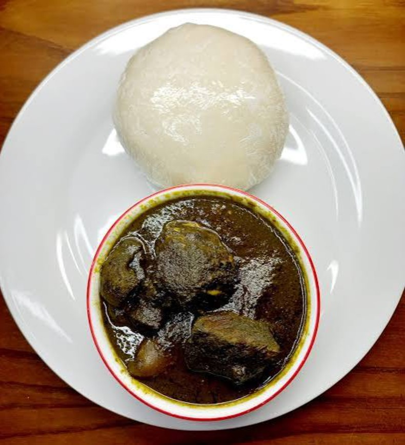
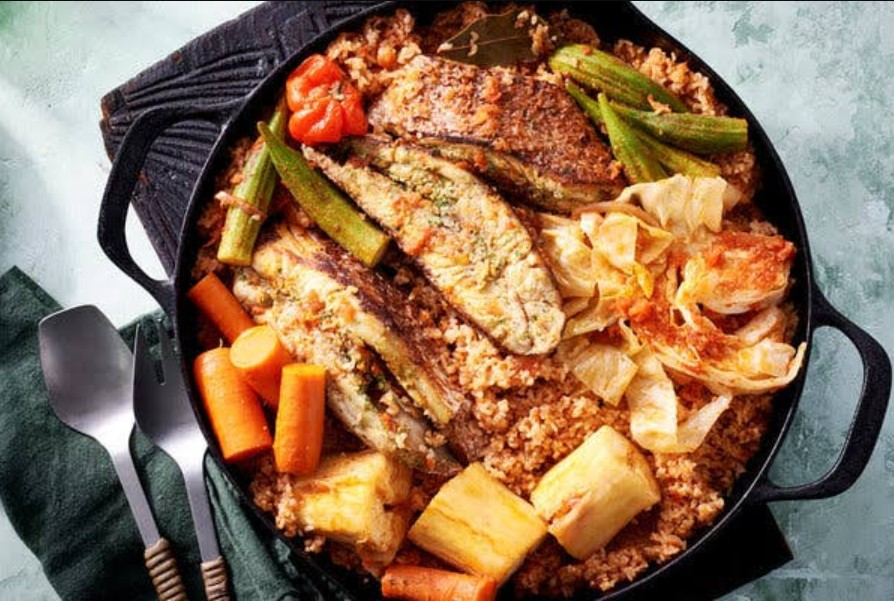

Rice
A major staple used in dishes such as Jollof Rice and other seasoned rice preparations.
Region 01 · Africa
Bold flavours, vibrant markets and culinary traditions that bring communities together.

A rich culinary identity
West African cuisine is known for its bold seasonings, hearty meals and creative use of locally grown ingredients. Food plays an important role in everyday life, family gatherings, celebrations and community traditions.
Countries such as Nigeria, Ghana, Senegal, Côte d'Ivoire and Mali each contribute distinctive dishes and cooking traditions to this diverse culinary landscape.
From richly seasoned rice to groundnut-based soups, West African food reflects a deep relationship between agriculture, culture and hospitality.
The foundation of the cuisine
Local crops, spices and fresh produce shape the flavours and identity of West African cooking.
A major staple used in dishes such as Jollof Rice and other seasoned rice preparations.
A versatile root crop processed into foods such as gari, fufu and other traditional staples.
An important food crop enjoyed boiled, pounded, fried or incorporated into hearty meals.
Ground into pastes and sauces, peanuts add richness to many soups and stews.
Used to create the heat and depth of flavour found in many regional sauces and dishes.
Local greens add colour, texture and nutrition to soups, sauces and accompanying dishes.
Traditional preparation
West African cooking combines simple preparation methods with carefully layered flavours. Techniques vary between countries and communities, but several approaches are widely recognised.

Famous dishes
Explore some popular dishes that showcase the variety and creativity of West African cuisine.

Nigeria and beyond
Rice cooked in a richly seasoned tomato and pepper sauce, enjoyed across several West African countries.
Explore the recipe →
Ghana and neighbouring countries
A beloved combination of a soft, starchy accompaniment served with flavourful soups and stews.
Explore more recipes →
Senegal
A celebrated Senegalese dish combining fish, rice and vegetables in a deeply flavoured preparation.
Explore more recipes →Experience the culture
Explore traditional food, cooking practices and the people who keep culinary heritage alive.
This video offers an African food-culture perspective, from Guerra tribe in Ivory Coast, West Africa.